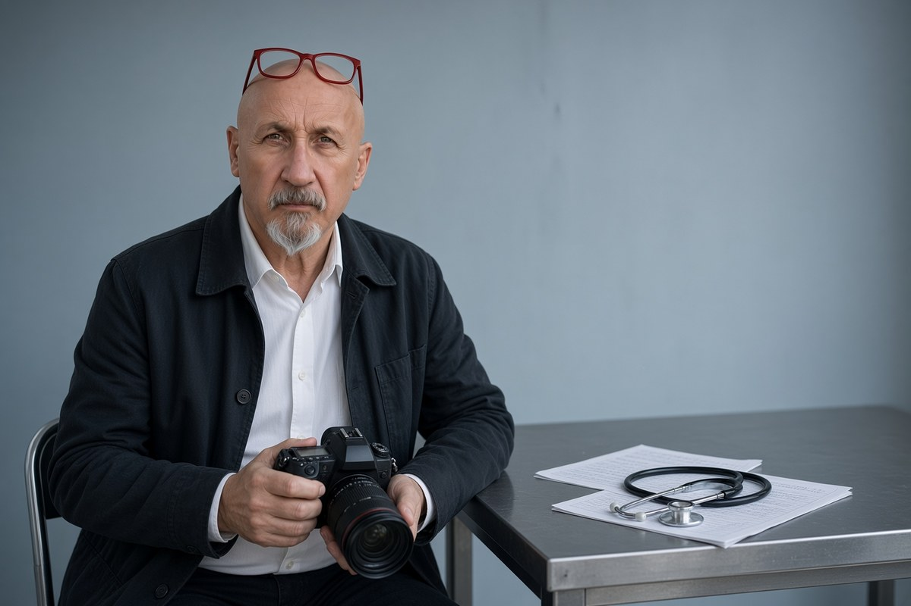

Cronaca · 27 ottobre 2026
Il vademecum «no Cpr» di Prato, e il medico che ci mette la voce

Due fogli scritti a mano con gli «escamotage» per certificare l'inidoneità al trattenimento. Un medico che lavorava alla Dogaia dice di averli scritti lui, e che l'idoneità non la darebbe «a nessuno per questioni politiche».
di Franco Zanghì
Nel carcere della Dogaia, a Prato, sono circolati due fogli scritti a mano che spiegano come certificare l'inidoneità di un detenuto straniero a entrare in un Centro di permanenza per il rimpatrio. Il 27 ottobre, in televisione, un medico che lavorava in quel carcere ha detto di averli scritti lui. E ha aggiunto una frase che è il cuore della questione: l'idoneità, ha detto, «non la darei a nessuno per questioni politiche». La domanda che ne esce è secca: un certificato medico può dipendere da un'idea?
Che cosa c'è nei due fogli
Il primo foglio è intitolato «No Cpr» e contiene un avvertimento e un elenco. L'avvertimento riguarda il rischio penale per chi segue quelle indicazioni: il falso ideologico, l'articolo 481 del codice penale, con il richiamo all'articolo 32 del codice di deontologia medica. L'elenco è quello dei cosiddetti escamotage: fare leva sulla sofferenza o sulla fragilità psicologica della persona, oppure sulla positività al test Quantiferon per la tubercolosi, anche quando manca ancora la radiografia al torace. Compare anche un giudizio: i Cpr sono «patogeni».
Il secondo foglio riguarda il testo unico sull'immigrazione, le notifiche, il trattenimento, la direttiva europea sui rimpatri del 2008 e la direttiva Lamorgese del 2022, quella che fino a pochi giorni fa rendeva vincolante il parere del medico. In fondo c'è una sezione su che cosa fare in caso di perquisizione: chiamare subito un avvocato, o in alternativa chiedere la presenza di una persona di fiducia.
Quello che il medico dice, e il punto che non torna
Il medico, il cui nome non è stato reso pubblico, sostiene di non aver scritto nulla di illegale: dice di aver messo su carta quello che aveva imparato dalla rete «No Cpr Mai più lager», di cui si dichiara esponente, perché in carcere non si può portare il telefono. Sulla data è andato in difficoltà. Ha detto prima di aver scritto quegli appunti più di un anno fa; poi, messo davanti al fatto che i fogli citano l'inchiesta di Ravenna, esplosa a febbraio, li ha collocati nel momento in cui aveva dovuto firmare per la prima volta un certificato per mandare qualcuno in un Cpr. Può essere. Ma finché non c'è una risposta documentata, la data resta una domanda aperta.
Va detto anche che non si tratta di un'esclusiva: il vademecum era già stato raccontato a inizio ottobre, prima da La Verità e poi da altre testate, e il Corriere Romagna ne aveva pubblicato gli stralci. La novità del 27 ottobre non sono i fogli: è che qualcuno ci mette la faccia, o almeno la voce. Sulle firme in calce le fonti non coincidono fra loro, e per questo non le riportiamo.
L'inchiesta di Ravenna, che è un'altra cosa
Sullo sfondo c'è il procedimento della procura di Ravenna sui medici «no Cpr»: otto medici indagati per falso ideologico, e l'infettivologo Nicola Cocco, che gli inquirenti indicano come promotore della rete, indagato anche per associazione a delinquere. Cocco sostiene che la campagna non chiedeva a nessuno di falsificare niente. Per tutti vale la presunzione d'innocenza fino alla sentenza definitiva. Tre dottoresse dell'ospedale di Ravenna erano state interdette dalla professione per dieci mesi; la Cassazione ha poi annullato quella sospensione, rinviando al tribunale del riesame di Bologna. Non ha assolto nessuno: ha annullato una misura cautelare, e l'inchiesta va avanti.
Sui fogli di Prato, invece, non risulta che sia stato iscritto un fascicolo: le testate scrivono che il materiale sarebbe stato acquisito dalla procura, ma una conferma ufficiale non c'è. Il medico non risulta indagato. E nessuno ha dimostrato che dietro quei fogli ci sia un coordinamento con Ravenna.
Dove è andata a finire
La politica si è mossa prima della magistratura. Fratelli d'Italia ha annunciato interrogazioni in Regione Toscana e al ministero, e ha rilanciato la richiesta di un Cpr in Toscana. Il 3 novembre il ministro dell'Interno Matteo Piantedosi ha riscritto la direttiva del 2022: la visita del medico dell'Asl resta, ma serve a dire di quali cure la persona ha bisogno, e il parere negativo non impedisce più il trattenimento.
Il punto
Il centrodestra ha ragione su una cosa: un Cpr funziona solo se dietro l'idoneità c'è un controllo serio, e se il certificato diventa un'arma politica quel controllo salta. Ma il governo deve stare attento alla direzione opposta: se al medico si chiede di fare da filtro per la sicurezza, si sporca la sua funzione, che è curare. E l'area politica che difende queste campagne una cosa deve dirla con chiarezza: sui Cpr si può discutere quanto si vuole, ma non si può chiedere a un medico di decidere in base a un'idea.
Resta una contraddizione che nessuno ha sciolto. Cocco sostiene che l'idoneità viene concessa quasi sempre. Il medico di Prato dice che lui non la darebbe a nessuno. Due versioni che faticano a stare insieme, e una sola delle due può essere vera.
Fonti
- La Verità, Fabio Amendolara e Filippo Curnis, sul vademecum trovato alla Dogaia, 10 ottobre 2026
- La Verità, Filippo Curnis, «Il medico no Cpr rompe il silenzio: il vademecum? L'ho scritto io», 27 ottobre 2026
- il Giornale, Giovanni Fiorentino, «Nel carcere di Prato trovato un vademecum per evitare il trasferimento dei detenuti stranieri nei Cpr», 8 ottobre 2026
- Libero Quotidiano, sul servizio di Filorosso dedicato al vademecum, 28 ottobre 2026
- Corriere Romagna, «In un foglio gli escamotage dei medici no Cpr»
Articolo scritto il 27 ottobre 2026 e pubblicato il 7 novembre, con il ricontrollo in rete previsto dal protocollo: i fatti sono quelli di ottobre, e l'unica novità successiva è la direttiva del Viminale del 3 novembre, richiamata nel testo. Sui fogli di Prato non risulta un fascicolo iscritto, e il medico non risulta indagato. Le fonti non coincidono su chi abbia materialmente firmato il vademecum: per questo le firme non sono riportate.